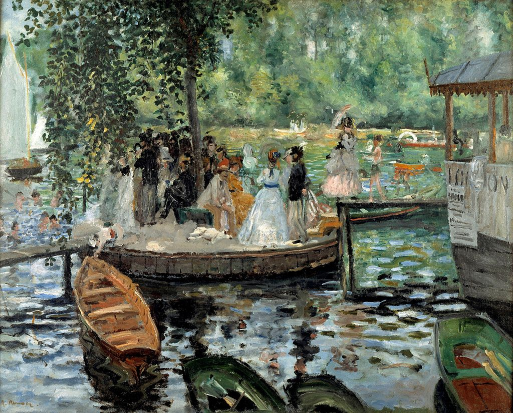
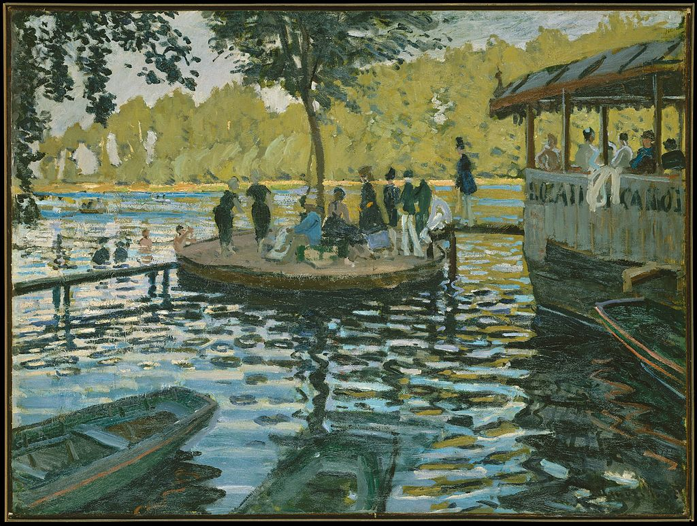

<head>
<meta charset="UTF-8" />
<meta name="keywords" content="drawing, painting" />
<meta name="description" content="drawings by Sunjy" />
<title>Sunjy</title>
<link rel="shortcut icon" type="image/x-icon" href="../../mImages/mCommon/favicon.ico" media="screen" />
<link rel="stylesheet" type="text/css" href="../../mCsses/mCommon/mCssA.css" />
<link rel="stylesheet" type="text/css" href="../../mCsses/mCommon/mCssB.css" />
<link rel="stylesheet" type="text/css" href="../../mCsses/mCommon/mCssC.css" />
<link rel="stylesheet" type="text/css" href="../../mCsses/mCommon/mCssD.css" />
<link rel="stylesheet" type="text/css" href="../../mCsses/mContent/mCssA.css" />
<link rel="stylesheet" type="text/css" href="../../mCsses/mContent/mCssB.css" />
<link rel="stylesheet" type="text/css" href="../../mCsses/mContent/mCssC.css" />
<link rel="stylesheet" type="text/css" href="../../mCsses/mContent/mCssD.css" />
</head>
<script type="text/javascript" src="../../mScripts/mContent/mContentAA.js" /></script>
<script type="text/javascript" src="../../mScripts/mContent/mContentAB.js" /></script>
<script type="text/javascript" src="../../mScripts/mContent/mContentAC.js" /></script>
<script type="text/javascript" src="../../mScripts/mContent/mContentAD.js" /></script>
<script type="text/javascript"></script> 
<script type="text/javascript">
document.write('<div class="mImgAbsolute"></div>');
/*
document.write('<p class="mFontSizeBColor" />From a white paper...</p>');
document.write('<table class="center"><tr><td>');
document.write('');
document.write('</td></tr></table>');
*/
</script>


<script type="text/javascript">
document.write('<p class="mFontSizeBColor" />La Grenouillère</p>');
document.write('<p class="mFontSizeSColor" />“La Grenouillère” by Pierre-Auguste Renoir depicts the La Grenouillère which was a popular middle-class resort consisting of a spa, a boating establishment, and a floating café.<br><br>Monet and Renoir both recognized in La Grenouillère an ideal subject for the images of leisure they hoped would sell.<br></p>');
document.write('<table class="center" /><tr><td>');
document.write('<br>Monet and Renoir both recognized in La Grenouillère an ideal subject for the images of leisure they hoped would sell.<br>" />');
document.write('</td></tr></table>');
document.write('<p class="mFontSizeBColor" />La Grenouillère by Claude Monet </p>');
document.write('<p class="mFontSizeSColor" />“La Grenouillère” by Claude Monet depicts “Flowerpot Island”, also known as the Camembert, and the gangplank to La Grenouillère, a floating restaurant and boat-hire on the Seine at Croissy-Sur-Seine.<br><br>He was accompanied by Pierre-Auguste Renoir, who also painted the scene at the same time.<br><br>This Claude Monet sketch captures his experience of fleeting visual effects or impressions that changed from moment to moment. These sketches were an essential step towards Impressionism.<br><br>La Grenouillère was painting by both Pierre-Auguste Renoir and Claude Monet at the same time.<br><br>They depicted the small island planted with a single tree, linked by gangplanks to the Île de la Grenouillère and to the fashionable La Grenouillère floating restaurant and boat-hire at Croissy-sur-Seine near Bougival.<br><br>The famous floating café “La Grenouillère” is where Claude Monet and Pierre-Auguste Renoir met at the end of the summer of 1869 to paint their first Impressionist paintings.<br><br>The two impoverished friends and artists sat side by side, in the early days of Impressionism at the same time to create their unique versions of La Grenouillère.<br></p>');
document.write('<table class="center" /><tr><td>');
document.write('<br>He was accompanied by Pierre-Auguste Renoir, who also painted the scene at the same time.<br><br>This Claude Monet sketch captures his experience of fleeting visual effects or impressions that changed from moment to moment. These sketches were an essential step towards Impressionism.<br><br>La Grenouillère was painting by both Pierre-Auguste Renoir and Claude Monet at the same time.<br><br>They depicted the small island planted with a single tree, linked by gangplanks to the Île de la Grenouillère and to the fashionable La Grenouillère floating restaurant and boat-hire at Croissy-sur-Seine near Bougival.<br><br>The famous floating café “La Grenouillère” is where Claude Monet and Pierre-Auguste Renoir met at the end of the summer of 1869 to paint their first Impressionist paintings.<br><br>The two impoverished friends and artists sat side by side, in the early days of Impressionism at the same time to create their unique versions of La Grenouillère.<br>" />');
document.write('</td></tr></table>');
</script>


